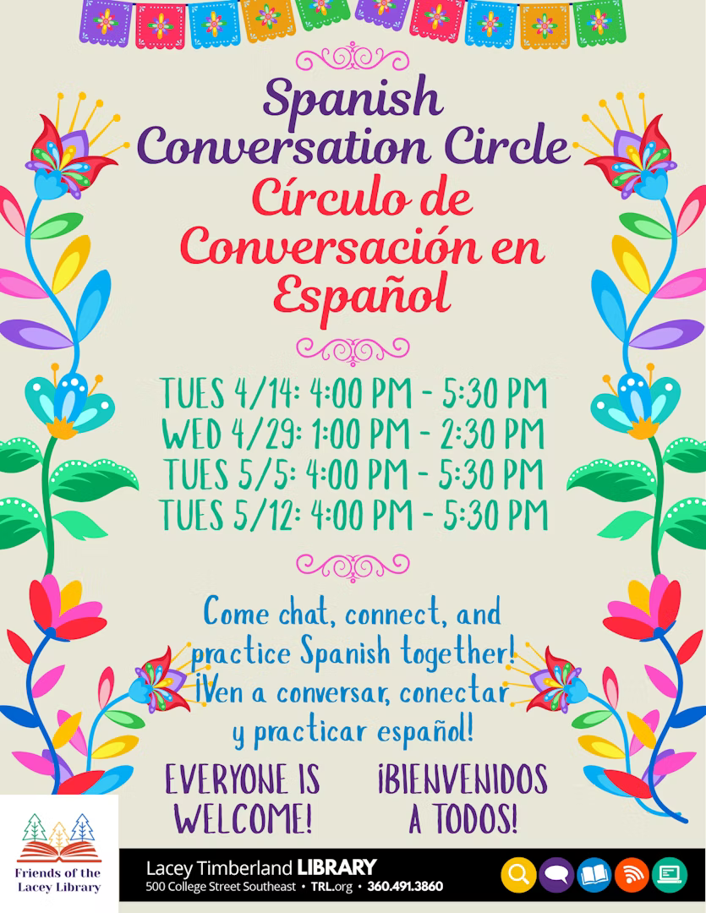

Week 2 — Semana 2
SPSCC · Spanish 122 · Chapter 5.2
Weekly Schedule
| Day | Type | Focus | Activities | Homework |
|---|---|---|---|---|
| Monday Lunes |
Self-Guided | Vocab 2 + gustar/encantar | Study Vocabulario 2 (weather + seasons); read Grammar 3; complete Ejercicio 5 | Ejercicio 5 due Tuesday; write 5 personal sentences with encantar or interesar |
| Tuesday Martes |
In-Class | gustar/encantar/interesar + tener que | Grammar 3 & 4 instruction; Ejercicio 6; preference chain activity; ordinal numbers drill | Ejercicio 7 (ordinal numbers); write 4 sentences with tener que |
| Wednesday Miércoles |
Practice | Weather + Seasons | Grammar 5 instruction (weather expressions); Ejercicio 8 (weather fill-in); seasonal vocab stations | Find 5 weather forecasts in Spanish online; describe one in 3 sentences |
| Thursday Jueves |
In-Class | Video Log Workshop + Review | Video Log 5 peer-review; Vocabulario Quiz 5B (weather + seasons + ordinals); cultural note on Panama | Finalize Video Log 1 script; prepare recording this weekend |

Online Resources
Gustar / Encantar / Interesar
▶ Video: Verbs Like Gustar: Encantar, Interesar 📝 Practice: Gustar-like Verbs PracticeTener que + Ordinales
▶ Video: Tener Que — Obligations in Spanish 📝 Practice: Tener que PracticeEl tiempo y las estaciones
▶ Video: Weather in Spanish 📝 Practice: Weather Expressions PracticeVideo Log + Quiz 5B
▶ Video: How to Talk About Your Daily Routine in Spanish📝 Practice: Chapter 5.2 Vocabulary Flashcards — use our class website to review
Vocabulario 2 — El tiempo y las estaciones
🃏 Click any card to flip it and see the translation
Vocabulario 3 — Los meses y los ordinales
🃏 Click any card to flip it
Gramática — Grammar Notes
Gustar, Encantar, Interesar — Expressing Preferences
Indirect Object Pronouns + Reverse-Subject Verbs
These verbs work backwards from English: the subject is what is liked/loved/found interesting. Use an indirect object pronoun to show who feels this way.
| Pronoun | Person | Singular Example | Plural Example |
|---|---|---|---|
| me | I / me | Me encanta la música. | Me encantan los idiomas. |
| te | you (informal) | Te interesa la historia. | Te interesan las culturas. |
| le | he / she / Ud. | Le gusta el café. | Le gustan las películas. |
| nos | we / us | Nos encanta bailar. | Nos encantan los deportes. |
| les | they / Uds. | Les interesa la política. | Les interesan las noticias. |
Key rule: Use the singular verb form with one thing or an infinitive; use the plural form with plural nouns.
Examples · Ejemplos
Me encanta la música tropical. → I love tropical music.
Me encantan los idiomas. → I love languages.
¿Te gusta el invierno o el verano? → Do you like winter or summer?
A ella le encanta bailar. → She loves to dance.
A ellos les interesa la política. → They find politics interesting.
Clarification tip: Add a + noun/pronoun for emphasis or clarity: A mí me encanta, pero a ella no le gusta.
Tener que + Infinitivo — Expressing Obligation
"Have to / Must" — Conjugated tener + que + infinitive
Use tener que + infinitive to say what someone has to do or must do. Only tener is conjugated; the second verb stays in the infinitive.
| Pronoun | Conjugation | Example |
|---|---|---|
| yo | tengo que | Tengo que estudiar. |
| tú | tienes que | Tienes que llegar a tiempo. |
| él/ella/Ud. | tiene que | Ella tiene que preparar la presentación. |
| nosotros | tenemos que | Tenemos que practicar. |
| ellos/Uds. | tienen que | Tienen que presentar el proyecto. |
More Examples
Tengo que levantarme temprano mañana. → I have to wake up early tomorrow.
¿Tienes que trabajar este fin de semana? → Do you have to work this weekend?
Esta semana tengo que estudiar, trabajar y descansar.
El tiempo — Weather Expressions
Hace · Está · Hay · Llueve · Nieva
Spanish uses several different constructions for weather — not a single verb. Learn each pattern:
| Pattern | Expressions | English |
|---|---|---|
| Hace + noun | hace sol, hace calor, hace frío, hace viento | It's sunny / hot / cold / windy |
| Está + adjective | está nublado, está despejado, está lloviendo, está nevando | It's cloudy / clear / raining / snowing |
| Hay + noun | hay niebla, hay tormenta, hay granizo | There is fog / a storm / hail |
| Verb alone | llueve / está lloviendo, nieva / está nevando | It rains / is raining, It snows / is snowing |
Context Examples
En Panamá en agosto: hace calor y llueve mucho. → In Panama in August: it's hot and it rains a lot.
En Minnesota en enero: hace frío y nieva. → In Minnesota in January: it's cold and it snows.
Hoy el cielo está despejado. → Today the sky is clear.
Ejercicios — Practice Exercises
Ejercicio 5 — Gustar / Encantar / Interesar
EJ. 5Fill in with the correct form of gustar, encantar, or interesar plus the correct pronoun. Multiple correct answers may be possible for some items.
Ejercicio 6 — Tener que: Responsibilities
EJ. 6Write what each person HAS TO DO using tener que + infinitivo. Type the complete sentence.
Ejercicio 7 — Ordinales y Meses
EJ. 7Fill in the ordinal number OR the month. / Completa con el número ordinal o el mes.
Ejercicio 8 — El tiempo: Weather Fill-in
EJ. 8Fill in with the correct weather expression from the word bank below.
Nota Cultural — Panamá
🌎 Panamá: El Cruce de las Américas / Crossroads of the Americas
Biodiversidad
Panama is one of the most biodiverse countries on Earth — with over 10,000 plant species and more bird species than the entire United States and Canada combined.
El Canal de Panamá
Completed in 1914, the Panama Canal connects the Atlantic and Pacific Oceans and handles about 6% of world trade. ¡Es increíble!
Parque Natural Metropolitano
Panama City is the only city in the Americas with a rainforest within its city limits: the Parque Natural Metropolitano.
El español panameño
Spanish in Panama blends Caribbean, indigenous (Ngäbe, Guna), and Afro-Antillean influences — a rich linguistic tapestry.
El clima de Panamá — Practice Discussion
Thursday in-class activity
Panama has a tropical climate with two main seasons: the dry season (la temporada seca, December–April) and the rainy season (la temporada lluviosa, May–November).
Discussion Questions
¿Qué tiempo hace en Panamá en diciembre?
→ In December (dry season): Hace sol y hace calor. Está despejado.
¿Qué tiempo hace en Panamá en julio?
→ In July (rainy season): Llueve mucho. Hay tormenta frecuentemente. Está nublado.
Video Log 1
Checklist de gramática — Recording Checklist
Check off each requirement as you complete it
0 / 7 completed
Guía de grabación — Recording Guide
Follow these 6 steps for a complete video log
Give your name and describe what a typical weekday looks like for you (1–2 sentences). Use ser to say who you are and tener to say what you have on your schedule.
Describe at least 4 things you do every morning in order, from waking up to leaving the house. Use reflexive verbs: despertarse, ducharse, vestirse, peinarse, desayunarse…
Describe what you do during the day: classes, work, lunch, errands. Include at least 1 stem-changing verb: almorzar (o→ue), poder, querer, pedir, empezar…
Say what you like, love, or find interesting about parts of your day — and what you dislike. Use gustar, encantar, interesar, molestar.
Describe one thing you have to do each day and what you do at night before going to bed. Use tener que + infinitivo and more reflexive verbs (acostarse, dormirse).
Tell the viewer one thing you would like to change about your routine, or compare a weekday to a weekend: "El fin de semana me levanto más tarde…"
Banco de vocabulario útil — Useful Vocabulary
Reflexive verbs · Stem-changers · Sequence words
Verbos reflexivos
Cambio de raíz
Secuencia
Script Draft — Escribe tu guión aquí
DRAFTWrite your script before recording. Aim for 2–3 minutes of speaking time (~200–300 words). Follow the 6-step guide above.
Speak directly to camera · 2–3 minutes
Peer Review Workshop (Thursday 0:10–0:35)
Watch partner's draft · Use checklist · Write 2 compliments + 1 suggestion
While watching your partner's video, check each element they include:
✨ Compliments (2):
💡 Suggestion (1):